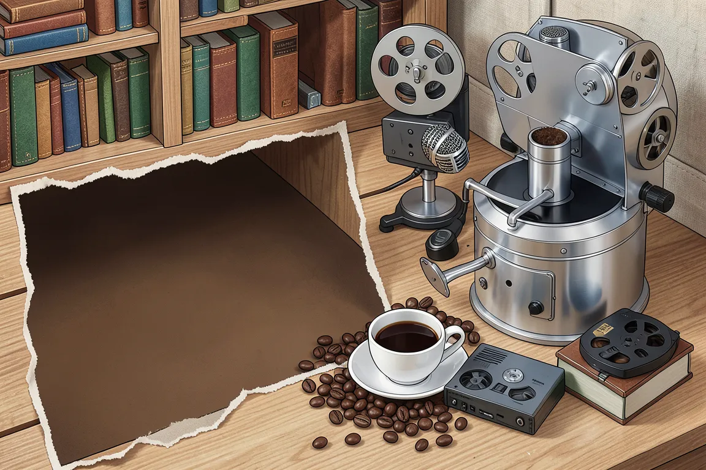

Interfaces that copy real objects: leather, linen, wood, felt, glass and brushed metal, lit from above with gradients and layered shadows. It has roots in 1980s desktop icons and peaked in iOS 1 to 6, until iOS 7 replaced it in 2013.

Core thesis
A screen control is easier to learn when it looks and behaves like a physical object that the user already knows.
Design principles
Model each control on a real object with a known use, such as a toggle switch, a notepad, a bookshelf or a dial, and keep its proportions within 10% of the original.
Light every surface from the top with one light source at 90 degrees, so that highlights sit on the top edge and shadows fall down.
Build depth from 3 to 5 stacked layers: a 1px light top highlight, a 2 to 4 gradient body, a 1px dark bottom edge, an inner shadow and an outer drop shadow.
Texture large surfaces with a repeating bitmap of 128 to 256px at 4 to 12% opacity: linen, leather, paper, wood grain or felt.
Give every button a gradient of 8 to 15% lightness difference from top to bottom, and invert that gradient while the button is pressed.
Add one stitched, embossed or debossed detail on each material panel, with a 1px inner highlight and a 1px outer shadow.
Reflect the real world in motion: page curls, flip transitions and spring-loaded switches follow the physics of the object they imitate.
Anti-patterns
Flat solid fills with no gradient or shadow on controls
A light source that changes direction between components
Textures that tile with a visible seam or repeat period shorter than 64px
Material metaphors that do not match the function, such as a wooden calculator